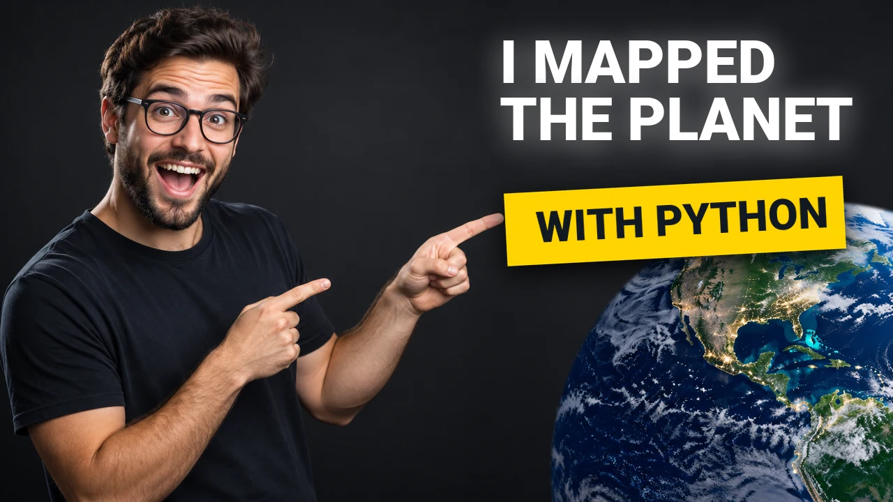
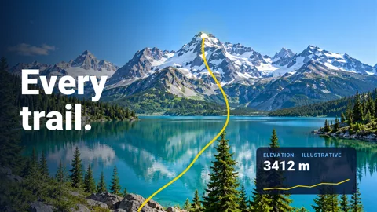
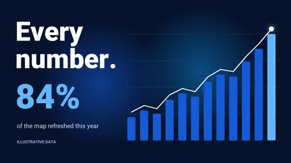
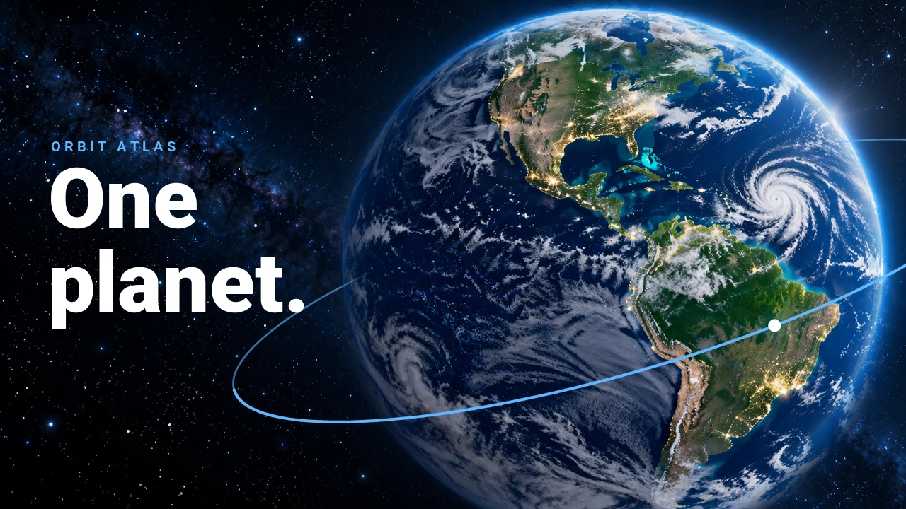

A Python creative toolkit
Make visuals
with code.
Create images, presentations, and animated videos from reusable layouts.
- Python 3.11+
- Open source
- Code or JSON
Images & graphics
Compose images.
Combine text, photos, and shapes into thumbnails, social graphics, and more. Your layout stays in code, ready to adapt.

# Simplified from examples/orbit_atlas.py
canvas = Canvas(WIDTH, HEIGHT).image(
CREATOR, (0, 0), WIDTH, HEIGHT, fit="cover"
)
canvas.text(
"I MAPPED\nTHE PLANET", position=(716, 58),
font=HEAVY, size=86, color=WHITE,
)
canvas.shape("rectangle", (722, 252), 486, 104,
YELLOW, rotation=-3)
canvas.text(
"WITH PYTHON", position=(756, 270),
font=HEAVY, size=62, color="#111923",
rotation=-3,
)
Presentations
Build presentations.
Bring canvases together in a deck with transitions and speaker notes. Export a presentation for the browser or PowerPoint.
Video & animation
Bring ideas to motion.
Animate layers and render a video or GIF. Add transitions, narration, and music as your story grows.


Reusable by design
Create once.
Reuse everywhere.
Keep your design in Python or JSON. One script renders the thumbnail, the deck, and the video.
# Simplified from examples/orbit_atlas.py
planet_thumbnail().render(
str(out / "orbit-thumbnail-planet.webp"),
quality=88,
)
slides = deck()
slides.render(str(out / "orbit-deck.html"))
if args.pptx:
slides.render(str(out / "orbit-deck.pptx"))
if not args.stills:
render_film(out) # orbit-film.mp4
- ThumbnailWebP
- PresentationHTML, PPTX

VideoMP4